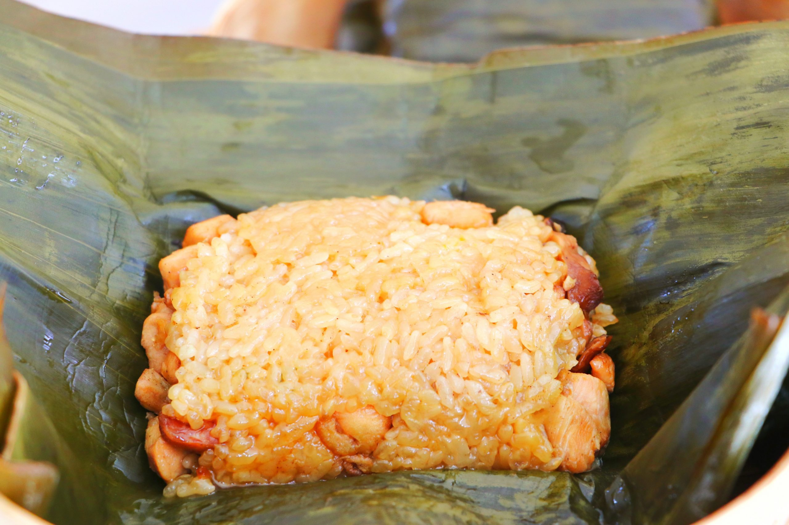
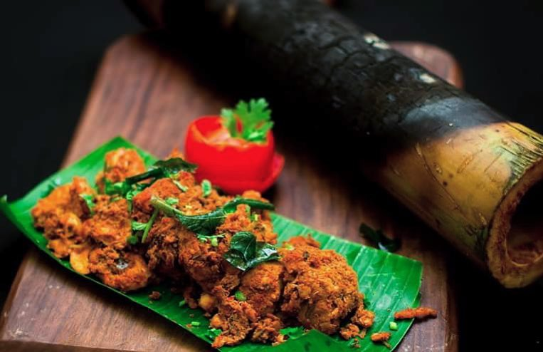
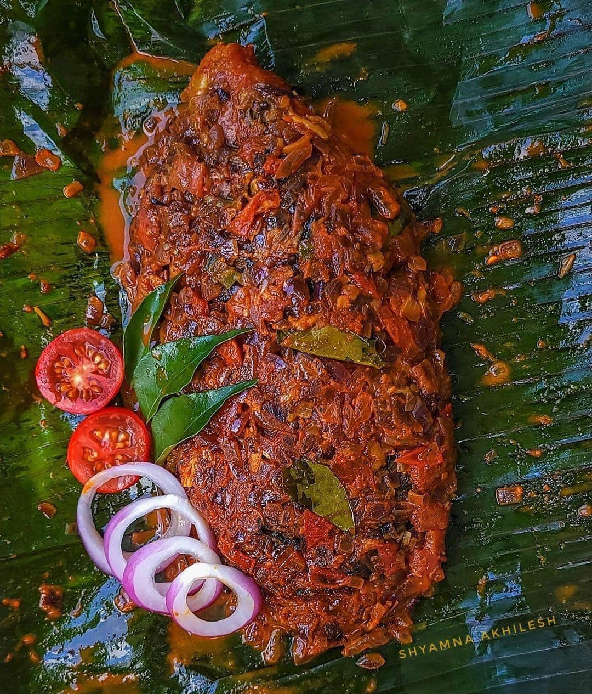

🏞️ Discovering Bandarban
Nestled in the lush green hills of southeastern Bangladesh, Bandarban is a hidden gem for nature lovers and adventure seekers.
From the misty peaks of Nilgiri to the serene waters of Sangu River, every corner of Bandarban whispers stories of peace and wonder.
During my journey, I hiked through tribal villages, tasted authentic hill cuisine, and watched the sun rise above the clouds.
It was a soul-refreshing experience that I’ll cherish forever.
🛠My Favourite Foods from Bandarban

Sticky Rice with Banana Leaf
- Sticky rice soaked overnight
- Wrapped in banana leaf
- Steamed for 30 minutes

Bamboo Chicken
- Chicken marinated with spices
- Stuffed inside bamboo tube
- Cooked over open fire

Banana Leaf Curry
- Mixed vegetables and fish
- Wrapped in banana leaf
- Slow-cooked over charcoal
🬠Bandarban Travel Moments
Watch this short video to experience the breathtaking beauty of Bandarban: